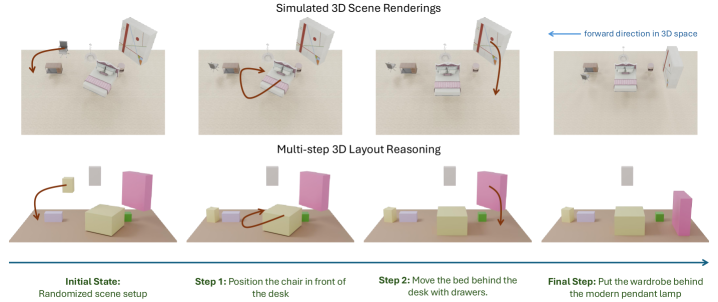
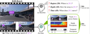
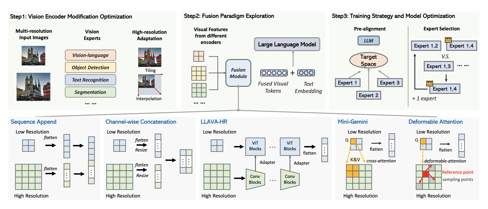
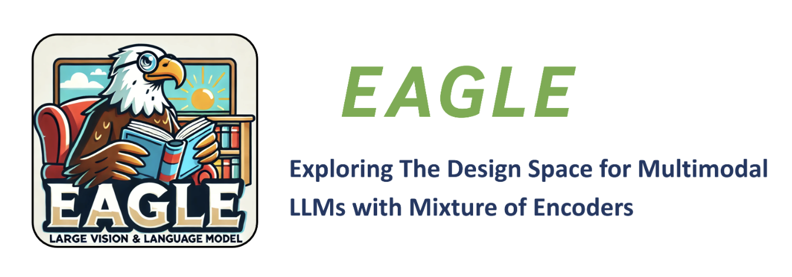
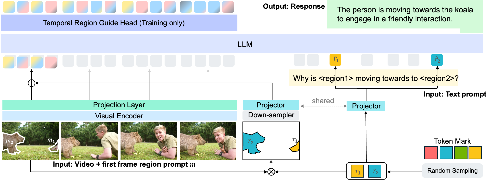
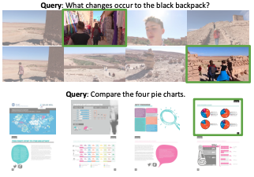
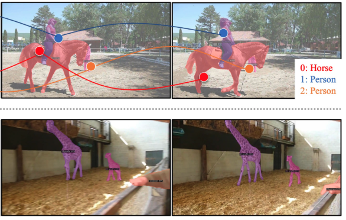

Tech Lead & Applied AI Researcher
NVIDIA
I am a Tech Lead and Applied AI Researcher at NVIDIA, building multi-modal AI systems and agents that bridge perception, reasoning, and real-world deployment.
My work focuses on designing and scaling vision-language, video-language, and agentic LLM-based systems, with a strong emphasis on 0→1 development—identifying the right problem, building the system, and taking it to production.
At NVIDIA, I have led several key initiatives, including NVCLIP (a multi-modal foundation model for vision-language understanding), LITA (Language-Instructed Temporal Localization Assistant for video reasoning), and 3D-Layout-R1 (structured spatial reasoning in 3D environments). My earlier work includes DiscoBox, a widely adopted approach for weakly supervised segmentation.
Currently, I lead efforts to build reasoning agents in interactive gaming environments—systems that perceive, plan, and act through foundation models, structured representations, and tool use.
My research interests include multi-modal reasoning, spatial and scene understanding, auto-labeling data engines, and agentic AI systems that tightly integrate perception with decision-making.
Prior to NVIDIA, I completed my Master's at Virginia Tech, where I worked on human-object interaction in videos under the guidance of Prof. Jia-Bin Huang.







Filed 25+ patents across multimodal learning, video understanding, and spatial AI.
Using Neural Networks to Perform Object Detection, Instance Segmentation, and Semantic Correspondence from Bounding Box Supervision
Determining Associations Between Objects and Persons Using Machine Learning Models
Training Object Detection Models Using Transfer Learning
Automatic Labeling and Segmentation Using Machine Learning Models
End-to-End Action Recognition in Intelligent Video Analysis and Edge Computing Systems
Class Agnostic Object Mask Generation
Language Instructed Temporal Localization in Videos
Language Instructed Temporal Localization in Video Using Image Tokens, Video Tokens, and/or Soft Cross Entropy Loss
Techniques for Implementing Multimodal Large Language Models with Mixtures of Vision Encoders
Auto-Labeling Systems and Applications for Open-Set and Out-of-Domain Segmentation
Object Segmentation Using Machine Learning for Autonomous Systems and Applications
Point-Level Supervision for Video Instance Segmentation